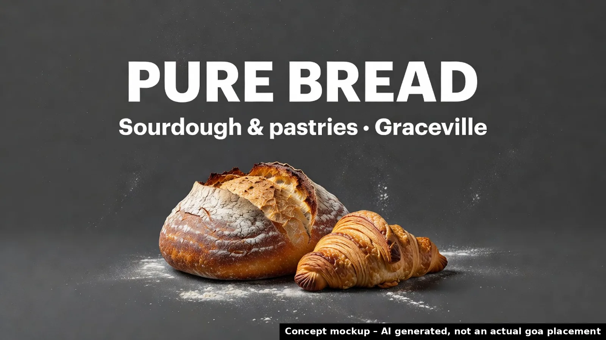

Pure Bread
Why now: Sourdough bakery at 293 Honour Avenue, Graceville; grand opening 3 Oct 2026.
🗓 Grand opening Sat 3 Oct 2026 · Source: Brisbane Food Guide – New Openings (checked 15 Oct 2026) ↗

Where your audience drives
Business pin is approximate (placed by hand from the published address/suburb, not geocoded). Distances are straight-line. goa site coordinates from goa's public site locator. © OpenStreetMap contributors.
Priority score 75/100
Why 75? Score breakdown
| Trigger certainty | 20/20 | Confirmed (opened / approved) | |
| goa site proximity | 15/25 | nearest goa site 1.1 km; 2 goa sites within 2 km | |
| Advertiser clarity & OOH fit | 15/25 | Named small food retailer: clear advertiser, smaller budget | |
| Timing window | 15/15 | key date 03 Oct 2026 (~18 days ago); opening-week window | |
| Source strength | 10/15 | Specialist guide / operator page |
Heuristic priority score from the factors above, not a prediction of sales outcomes.
Campaign builder
Pick sites and flight length to shape a brief. Pricing isn't shown: indicative pricing confirmed by goa.
Indicative pricing confirmed by goa. Availability subject to booking.
Campaign timeline
- NowRep reviews trigger and approves the draft pitch
- 03 Oct 2026Trigger: Grand opening Sat 3 Oct 2026
- 28 OctSuggested flight start: launch awareness while the opening is fresh
- 25 NovMid-flight check-in: refresh creative / dayparting on digital
- 12 DecQLD summer school holidays begin (to 26 Jan 2027): optional seasonal burst
Concept creative

Concept mockup – AI generated, not an actual goa placement. No real logos used; final creative from the client.
Idea
Reference the bakery's grand opening date and location from the Brisbane Food Guide. Highlight two specific nearby goa sites by number and distance to show relevance without exaggeration.
Objective
Secure a 15-minute call with the owner or manager of Pure Bread to discuss billboard options for their grand opening.
Audience
The owner or manager of the new sourdough bakery in Graceville.
Draft pitch email
Subject: Pure Bread Graceville opening Hi there, I saw the news of your new sourdough bakery opening in the Brisbane Food Guide. Pure Bread at 293 Honour Avenue Graceville has its grand opening on 3 Oct 2026. Our goa sites nearby include site 4075 0001 at Sherwood Railway Station 1.1 km away and site 4075 0002 at Corinda Railway Station 1.9 km away. These could help local residents and commuters notice your new offering. Would you have time for a 15-minute call to discuss how we might assist? [Rep name] -- [Rep name] | goa Billboards | 143 Abbotsford Road, Bowen Hills QLD 4006 | (07) 3854 1150 [Consent basis to be confirmed by the rep before sending: express or inferred consent under the Spam Act 2003.] To opt out, reply 'unsubscribe' or use [unsubscribe link]; we action requests within 5 business days.
AI draft. Requires rep review and approval; sent only from the rep's Outlook, with opt-out (Spam Act 2003).
Next step (how it would work)
After a rep approves the pitch, the prospect books a 15-minute chat to confirm availability and indicative pricing for the selected sites.
Book a call (disabled in demo)In production this would book a call with the assigned goa rep. This business has not been contacted.